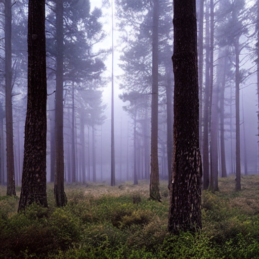
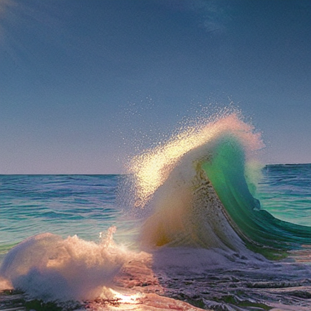
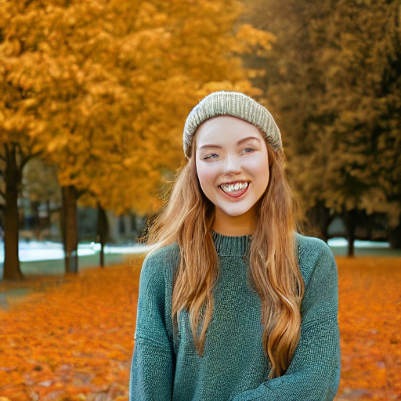
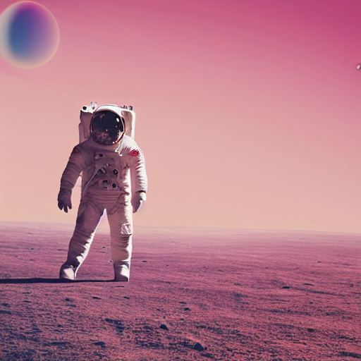

UTMIST · 2025–2026
Stable Diffusion,
Reproduced.
A from-scratch reimplementation of Stable Diffusion in PyTorch by the University of Toronto Machine Intelligence Student Team.






samples from our pipeline · SD 1.4 weights, DPM-Solver++ 2M, 25 steps